好的，让我们一起来解决这两个问题。历史上的顶级智士都说过，统计数据是不可信的谎言，不是吗？
| 我在网上搜索到的名言 | 通过更深入的搜索，我发现的真相 |
| “谎言有三种：谎言、该死的谎言和统计数据。”——马克·吐温 | 人们常常误以为这句名言出自马克·吐温，这也挺公平的，因为马克·吐温自己也误以为这句话出自本杰明·迪斯雷利。实际上，这句话的出处是未知的。 |
| “任何不是你自己捏造的数据，都别相信。” （或者：“我只相信那些我篡改过的数据。”）——温斯顿·丘吉尔 | 这是对丘吉尔的诽谤，它可能出自纳粹宣传部长约瑟夫·戈培尔。 |
| “87%的统计数据是当场编造的。” | “87%的名言是当场被误传的。”——奥斯卡·王尔德 |
| “统计数据有两种，一种是你查阅的数据，另一种是你编造的数据。”——雷克斯·斯托特 | 雷克斯·斯托特是一位小说家。他没这么说过，是他笔下的一个角色说的。 |
| “统计数据之于政客，就像路灯之于醉汉——用来支撑自己而不是照明方向。”——安德鲁·朗格 | 这个是真的，而且说得很好。 |
| “总有一天，统计思维将和读写能力一样成为公民必需的能力。”——赫伯特·乔治·威尔斯 | 唉，就连统计专业数据中也有这种误用的问题。实际上，威尔斯说的是“可以想见有那么一天，计算的能力，考虑平均值、最大值和最小值的能力会变得和读写能力一样必需。” |
所以，我要说的是什么？是的，数字会骗人。但是文字也可以，更不用说图片、手势、嘻哈音乐剧和筹款邮件了。我们的道德体系谴责的是说谎者，而不是他们为谎言选择的媒介。
对我来说，对统计学最有趣的批评不是针对统计学家的不诚实，而是针对数学本身。我们可以通过了解统计数据的缺陷，通过观察每个统计数据捕捉的对象以及故意忽略的对象来提高统计数据的价值。也许到那时，我们就能成为赫伯特·乔治·威尔斯所设想的那种公民。1
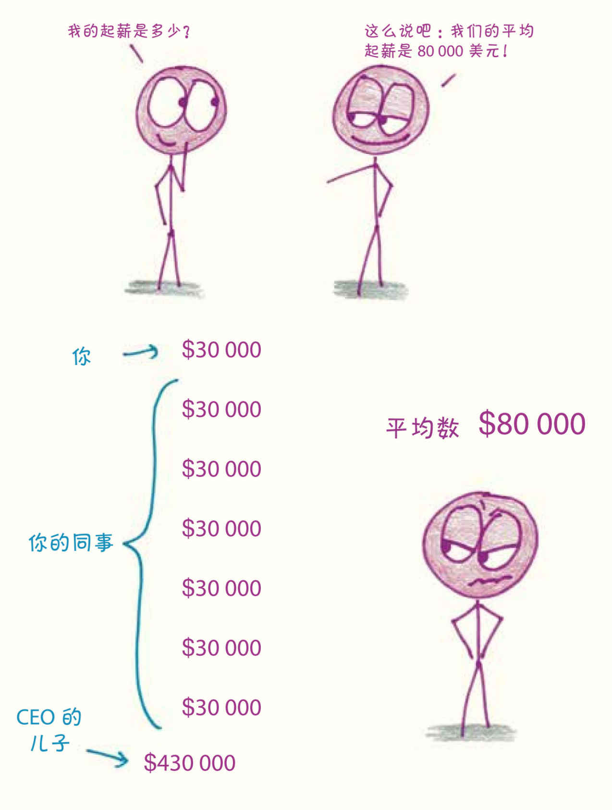
计算方法：把所有的数据相加后，再除以数据的个数。
适用范围：平均数（又称为“均值”）满足了统计学的一个基本需求——捕捉一个群体的“集中趋势”。那个篮球队的队员有多高？你们一天卖多少个甜筒冰激凌？这个班考得怎么样？如果你试图用一个单一值来概括整个总体，那么平均数是明智的第一选择。
不可信之处：平均值只考虑两条信息，总数和为总数做贡献的人数。
如果你参与过一批海盗宝藏的分配，那么你就会发现其中的陷阱：分享这些宝藏的方法可以有很多。每个人该分配多少？是平均分配还是有侧重地分配？如果我吃了一整张比萨饼，却什么都没给你留下，但我们“平均”每人吃了半张比萨饼，这样公平吗？或者，你可以在晚宴上和客人们说，每个人“平均”都有一个卵巢和一个睾丸，这不会让谈话陷入尴尬的境地吗？（我试过，会的。）
人类关心分配方式，平均值却对此毫不在意。
不过呢，平均数倒是有一个可取之处，就是容易计算。假设你三次考试的成绩分别是87、88和96（是的，你前两次考得不够好）。那么考试的平均分是多少呢？不要过分纠结于加法和除法，只要重新分配就可以了。从最近的一次考试分数中拿出6分，分3分给第一次考试，分2分给第二次考试，这样三次考试的分数就是90、90、90，还剩下1分，将这孤独的1分拆分成三份再分配到三次考试中，就得出了你的平均分：90
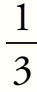
，是不是很容易呢？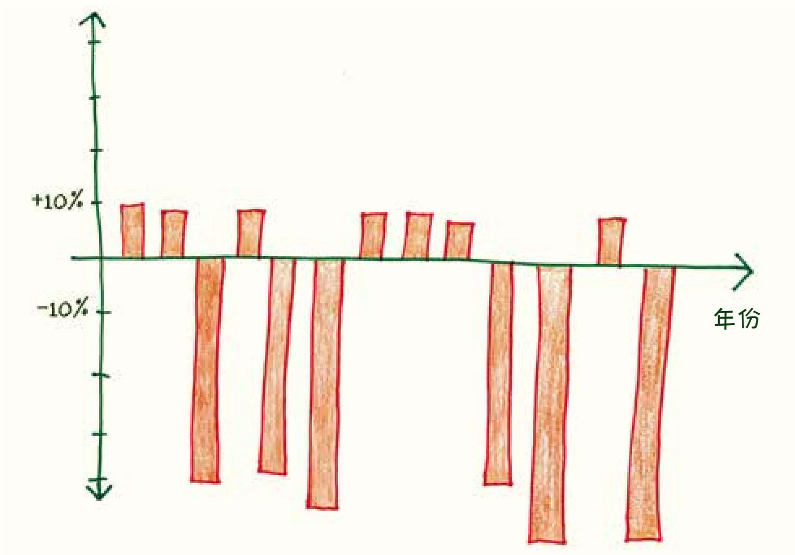
计算方法：把所有数据从高到低排序后，找出中间的一个作为中位数，数据的一半在中位数以下，一半在中位数以上。
适用范围：和平均值一样，中位数也能体现总体数据的集中趋势，而二者的不同之处在于，中位数对极端值的灵敏度很差，或者更确切地说，它完全不灵敏。
就拿家庭收入来说，在美国，富裕家庭的收入可能是贫穷家庭的数十倍（甚至数百倍）。平均值是假设每个家庭在总收入中有平等的份额，极端值会拉扯这个平均份额，让平均值偏离多数数据的值。美国家庭收入的平均值是75 000美元。2
而中位数会抵抗极端值的拉力，不受极端值的影响。相反，它体现出的是在美国绝对的中等家庭收入，这是一个完美的中点，有一半的家庭比这更富裕，而另一半家庭比这更贫穷。美国家庭收入的中位数接近58 000美元，这比平均值更能体现 “典型”美国家庭的收入水平。
不可信之处：一旦找到了中位数，你就知道有一半的数据在其上，另一半数据在其下。但是这些点离中位数有多远呢？如果你只盯着一张饼的中心，而不管其他部分有多大或多小，就无法了解这张饼的真实情况。
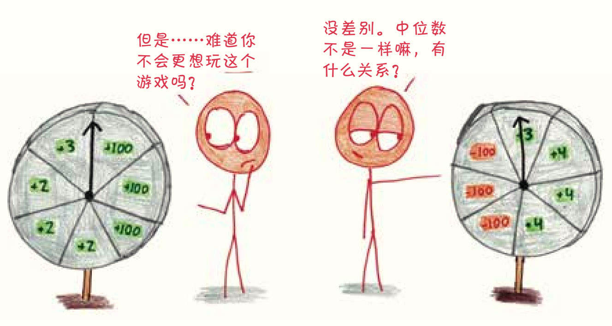
一位风险投资家投资新企业时，她预计大多数企业都会失败，但十分之一的企业会赚得盆满钵满，这完全能弥补失败的企业带来的微小损失。然而，中位数忽略了这种动态的变化，只盯着中间的“典型”数据，它大喊：“创业的典型结果是失败，快停止投资吧！”
与此同时，一家保险公司建立了一个谨慎的投资组合，其中发生概率为千分之一的罕见灾难带来的损失可能会远高于多年积累的微薄利润。但中位数会忽略潜在的危险，它在欢呼：“嘿，保险的典型结果是不会发生危险，我们会获得利润，这个方案永远不要停！”
因此，你会发现统计报告中常常既有中位数，又有平均值。中位数体现的是数据中的典型数值，而平均数展示整体的水平。中位数和平均值就像两个不完美的目击者，他们共同讲述的故事会比单独讲述的故事更完整，而且更接近事实。
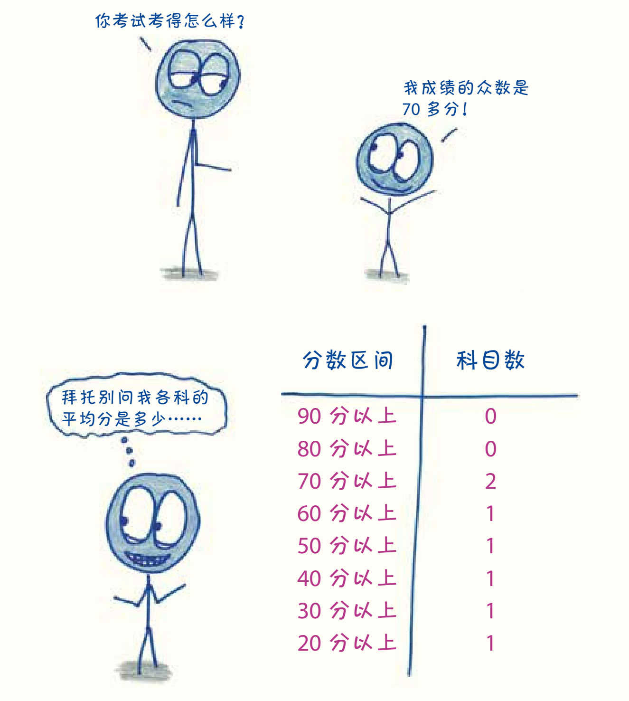
计算方法：众数是统计数据中重复次数最多的数值，代表数据中的潮流。
但如果每个值都是唯一的，没有重复呢？在这种情况下，可以将数据分类，并将最常见的类别称为“众数组”。
适用范围：众数在民意调查和制作非数字类型数据表的方面优势明显。如果你想总结人们最喜欢的颜色，就不可能用“合计颜色”来计算平均值。或者假设你在主持一场竞选，如果你把选票按照从“最自由的”到“最保守的”排序，然后让处在最中间的候选人当选，公民会抓狂的。
不可信之处：中位数忽略了整体性，平均数忽略了分配方式，而众数则把整体性和分配方式都忽略了，应该说，它几乎忽略了其他全部信息。
众数代表的是一组数据中出现次数最多的值，但出现次数最多并不意味着最有代表性。比如说，美国的工资众数是0——不是因为大多数美国人破产或失业，而是因为工薪阶层的收入从1美元到1亿美元之间，数字是分散的。而所有没有工资的人收入都是相同的数字——0。因此，这一数据不能说明任何问题。事实上，在每个国家的工资众数都是0。
将数据分类后，使用“众数组”并不能完全解决这一问题，只是给了展示数据的人一手遮天的权力，他们可以根据自己的想法划分类别边界。通过不同的划分方式，他们可以把美国家庭收入的众数组“设定”为1万至2万美元（每1万美元为一个类别），或2万至4万美元（每2万美元为一个类别），或3.8万至9.2万美元（每个纳税等级为一个类别）。
尽管用的是完全相同的一组数据集和完全相同的统计数据，但由于画家对画框的选择不同，画像完全变了。
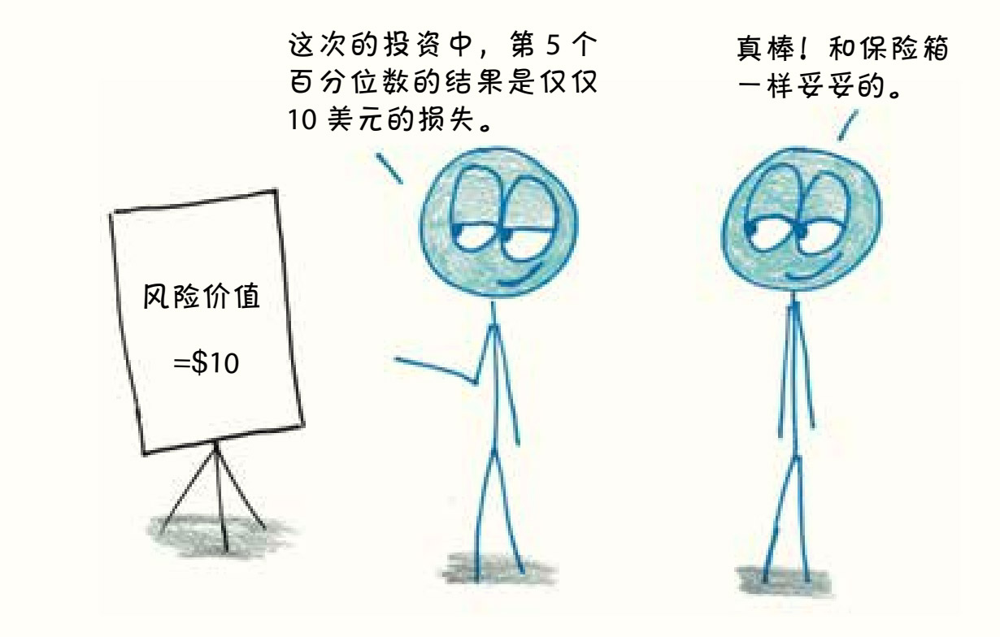
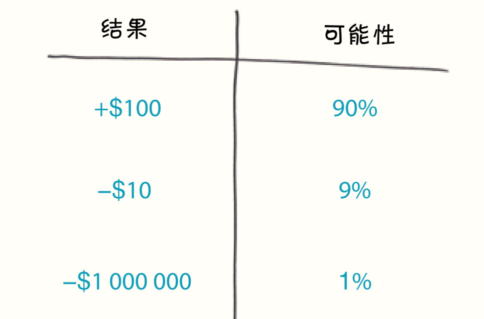
计算方法：中位数将一组数据一分为二，而百分位数是一个有调光开关的中位数。第50个百分位数就是中位数本身（一半的数据在其上，一半的数据在其下）。
但你也可以选择其他的百分位数。比如，第90个百分位数位于这组数据的顶部：只有10%的数据位于其上，而90%的数据位于其下。与此同时，第3个百分位数位于数据集的底部：只有3%的数据低于这个值，而97%的数据高于这个值。
适用范围：百分位数是非常灵活和方便的，非常适合在排序中使用。这就是为什么标准化考试通常以百分位数的形式给出分数。类似“我答对了72%的问题”这样的原始分数提供的信息是不够的，因为这些题目的难度是未知的。然而，如果你说“我在第80百分位”就体现了你的水平：你考得比80%的考生好，比20%的考生差。
不可信之处：百分位数和中位数的缺点是一样的，它们可以告诉你有多少数据位于某个点的上方或下方，但不会告诉你这些数据的距离有多远。
在金融行业中，百分位数常用于衡量投资的风险。人们将可能的结果从赢利到亏损进行排序，然后选择一个百分位（通常是第5个），将其定义为“风险值”（VaR，value at risk）。设定VaR的目的是了解最坏的情况，但实际上，还有5%的可能会比这更糟。而VaR却不能让人看出“更糟”的程度，我们仍然不知道最糟的情况是再多损失几分钱，还是数十亿美元。
通过观察更多作为VaR的百分位数（例如，第3、第1或第0.1个百分位数），我们可以更好地看到各种可能性，但从本质上来讲，百分位数无法体现最剧烈和极端的损失。因此，真正最糟的情况总是在百分位数的盲区。
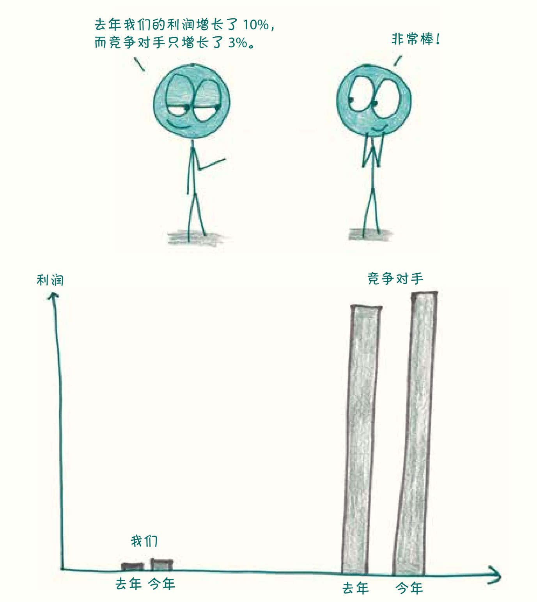
计算方法：用变化除以原来的总数。
适用范围：变化百分比有利于我们正确地结合整体看待事物，它用在整体中的占比表现收益和损失。
想象一下，我今天赚到了100美元。如果我最初只有200美元，那么这笔收入就意味着我的财富迎来了50%的增长，非常值得我跳夏威夷草裙舞庆祝了。但如果我本来就有2万美元，那么这笔新收入就只是0.5%的增长，我大概只会微笑着挥挥手，并没有太多的兴奋。
当你看到一个增长的百分比时，学会结合整体看待事物是至关重要的。如果70年前的美国人听说美国去年的GDP增长了5 000亿美元，他们会惊叹不已，但如果是听说它增长了3%，就会觉得没什么了不起的了。
不可信之处：嘿，我常以发展的眼光看事情，但对于变化百分比而言，尽管它在努力地展现发展的趋势，但很多时候其实并无作用。
我住在英国的时候，有时候只要1英镑就能买到原价2英镑的番茄酱3。那种感觉就像中了头彩：节省了50%！我拖着一打番茄酱回家，足够蘸几个月的意大利饺了。后来，我要买机票去美国参加婚礼，因为晚了一周购买，价格上涨了5%。“啊，好吧，也就是多了一点儿。”我很轻易地就接受了这样的涨价。
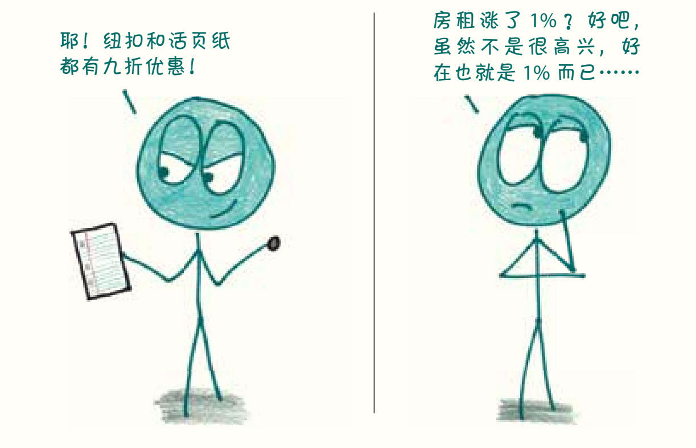
你可以看到问题在哪儿了，我的直觉是小事聪明，大事糊涂。番茄酱的“超大折扣”为我省了12英镑，而机票价格的“小小上涨”让我多花了30英镑。但是呢，不管是在20美元的超市小票还是在20万美元的贷款协议书上，1美元都是1美元。廉价商品价格的大幅下跌与贵价消费品价格的小幅上涨相比，其实是微不足道的。
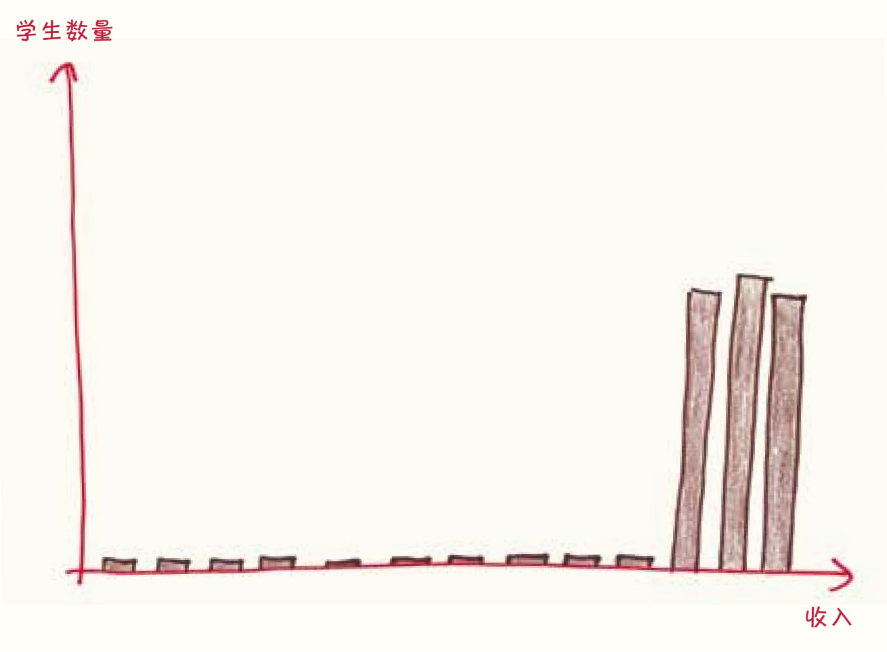
计算方法：极差是一组数据中，最大值和最小值之间的差值。
适用范围：平均数、中位数和众数体现的都是数据的“集中趋势”，目标都是将一组多样化的数据分解为一个具有代表性的数值。而极差的目标则相反，不是掩盖分歧，而是量化和显示分歧，以衡量数据的波动范围。
极差的主要优点在于简单。它把一组数据想象成一个波长从“最小”排列到“最大”的光谱，并告诉我们这个光谱的宽度，是一种对多样性的粗略总结。
不可信之处：如果把数据比作切成一块块的蛋糕，极差只关心最大和最小的两块蛋糕，而忽略了很多关键信息，比如所有中等切块的大小。它们是更接近最大值还是更接近最小值？还是均匀分布在最大值与最小值之间的范围内？极差既不知道也不关心。
数据集越大，极差的可信度就越低，因为它忽略了数百万个中间值，只关注到两个最极端的异常值。如果你是一个外星人，从统计数据中了解到地球成年人身高的极差约为2米（史上最矮成年人的身高不到60厘米，最高的接近2.7米），你可能会在访问地球时失望地发现，在地球上遇到的几乎都是我们这些身高1.5米到1.8米的普通人。
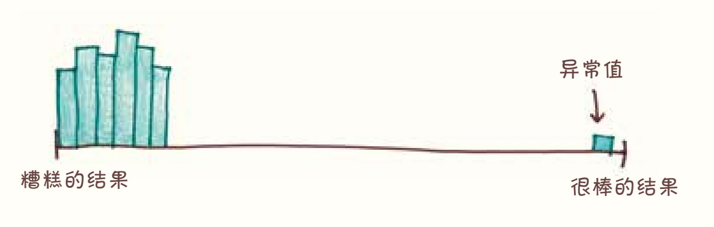
标准差可以粗略地告诉你，一组数据中的数据离均值有多远。
计算方法：（1）求数据集的均值；（2）求出每个数据点离均值的距离；（3）求出这些距离的平方；（4）求这些距离的平方的平均值。这就得到了这组数据中，每个数据与平均数之差的平方的平均数，也就是方差。
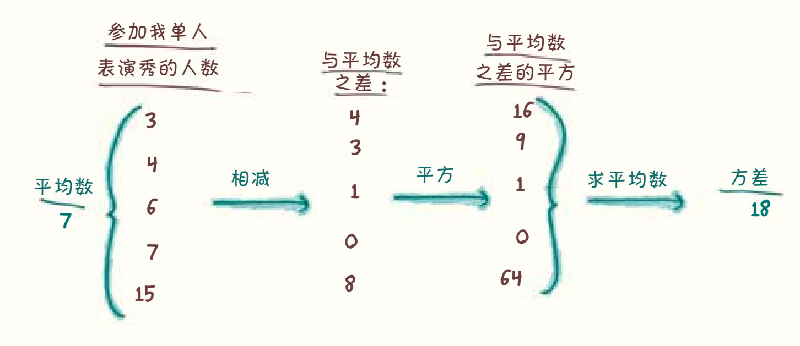
把方差开平方根后4，得到的就是标准差。标准差比方差更直观，因为方差的单位带有奇怪的平方，“美元的平方”是什么意思？没有人知道。
由于方差和标准差经常一起出现，所以我也将这二者放在一块儿讨论。
适用范围：和极差一样，方差和标准差都可以量化数据集的多样性，但是，我得带着慈爱的老父亲的公正态度说一句——它们比极差做得更好。极差是一种快速的权宜之计，方差则是统计学的中流砥柱。如果说极差是简单的双音符小调，方差就是复杂的交响乐，可以从数据集的每个成员中提取信息。
方差的计算虽然错综复杂，但经过检视还是可以发现逻辑。它取决于每个数据与均值之差，“方差大”意味着数据分布广泛，“方差小”则是指数据的集中程度高。
不可信之处：当然，每个数据都对方差有贡献，但具体的贡献大小是体现不出来的。
尤其是当数据中存在极端值时，单个极端值就能极大地提高方差。由于在计算中有求平方这一步，单个极端值（例如，差值为12时，122=144）比12个与平均值较为接近的数据（例如，差值为3，32=9，十二个这样的数据也只有108）对方差的贡献还大。
方差还有一个让人困惑的特性（不算是缺点，只是违反直觉）。学生们常会认为有很多不同值的数据集（如1、2、3、4、5、6）比有重复值的数据集（如1、1、1、6、6、6）更“分散”，但其实方差对“多样性”不感兴趣，它关心的只是各个数据到均值的距离。
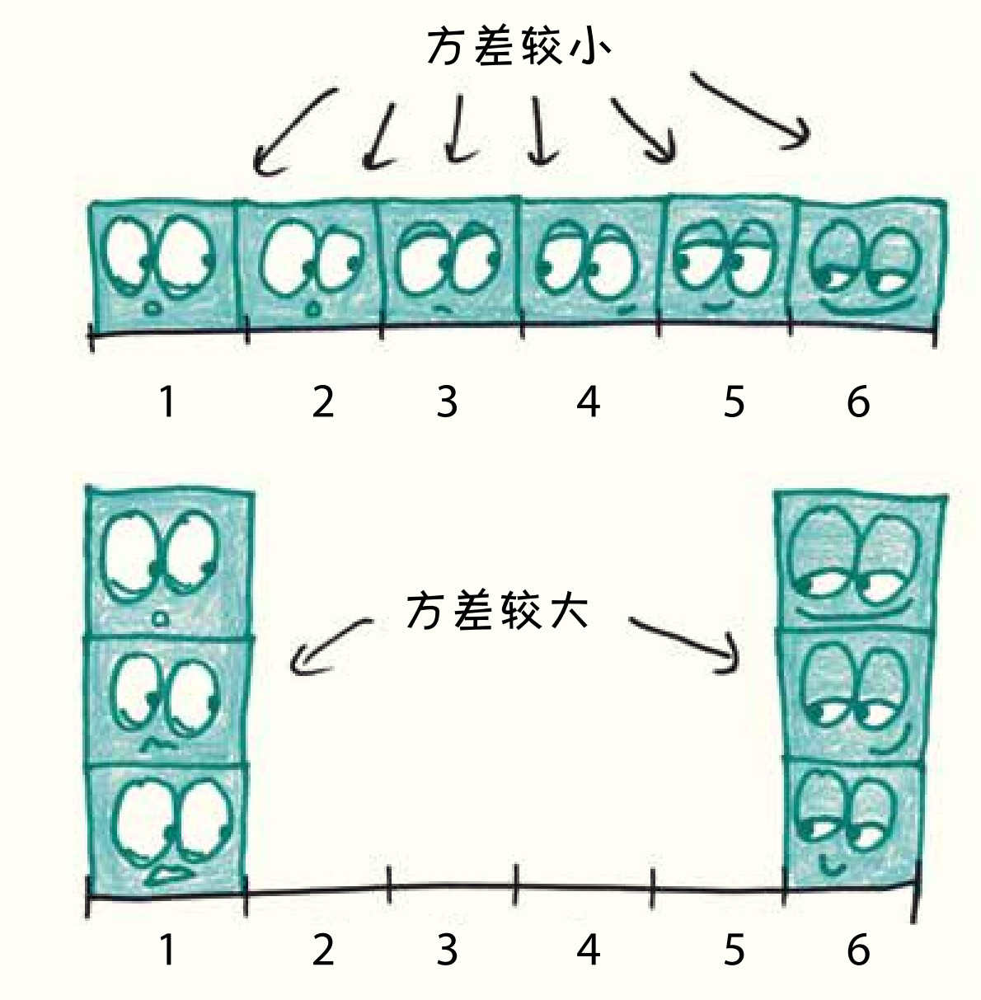
从方差的角度来看，后一组（重复的、离均值较远的值）的离散度大于前一组（不重复但离均值较近的值）的离散度。
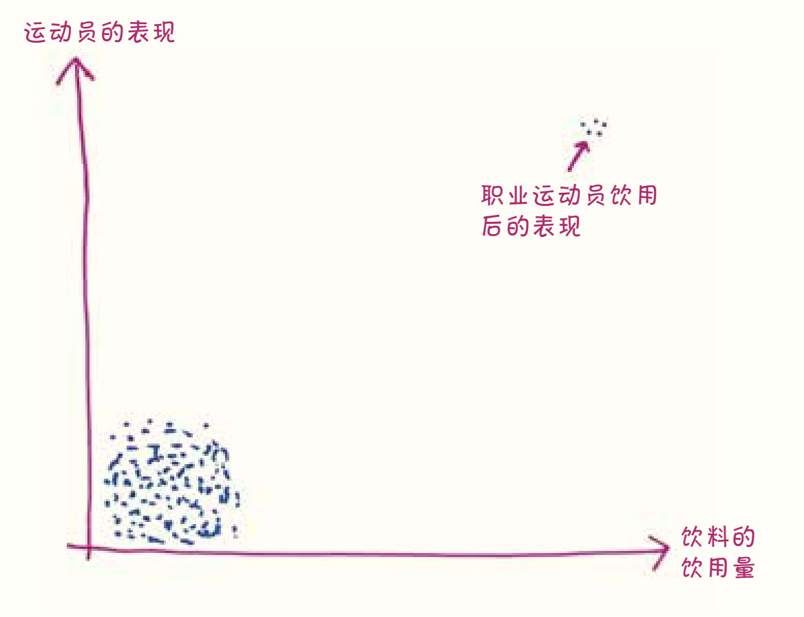
计算方法：相关系数用于量化两个变量之间的关系。例如，一个人的身高和体重，或一辆车的价格和销量，或一部电影的预算和票房收入。
相关系数的最大值为1（“哇，它们是完全正相关的”），中间值为0（“啊，它们之间完全没有联系”），最小值为-1（“嗯，它们是完全负相关的”）。
好吧，这就是个简单的总结。要了解相关系数实际上是如何工作的，请查看尾注。5
适用范围：富裕国家的人们更幸福吗？大量打击轻罪罪犯能预防犯罪吗？红酒是能延长寿命，还是只能延长晚宴？以上这类问题都涉及变量对之间的关系，涉及想象的原因和推测的结果之间的关系。理想情况下，你可以通过实验来回答这些问题。给100人提供红酒，100人提供葡萄汁，看哪一组活得更久。但是这样的研究耗时耗财，而且还不道德——想想那个不能喝酒的对照组有多可怜。
相关系数让我们能够从侧面解决这样的问题。可以找一群人，监测他们的葡萄酒摄入量和寿命，看看这些饮酒者是不是活得更长。诚然，即使是很强的相关性也不能确定因果关系，也许葡萄酒可以延年益寿，也许人们年纪大了以后会更喜欢喝酒，也许两者都是由第三个变量驱动的（例如，富人都活得更长，买得起更多的葡萄酒），这些我们都不可能知道。
即便如此，相关系数的研究还是提供了一个很好的起点，求相关系数既省时又省力，而且支持大数据集。尽管结果还不够精确，但已经是非常有用的线索了。
不可信之处：相关系数是所有统计总结中最强势的，它将数百或数千个数据（每个数据都有两个变量）浓缩成一个介于-1和1之间的数字，省略了很多信息。这是一个数学上的奇怪概念，被称为安斯库姆四重奏（Anscombe's quartet）。
现在，让我们走进安斯库姆魔法学院，这里的学生已经花了几个星期的时间准备四门课的考试：魔药课、变形课、魔咒课和黑魔法防御术课。对于每门考试，我们将考虑两个变量，分别为每个学生花在学习上的时间和该学生在考试中的分数（满分13分）。
从汇总的数据来看，你会认为这四个考试没什么不同：
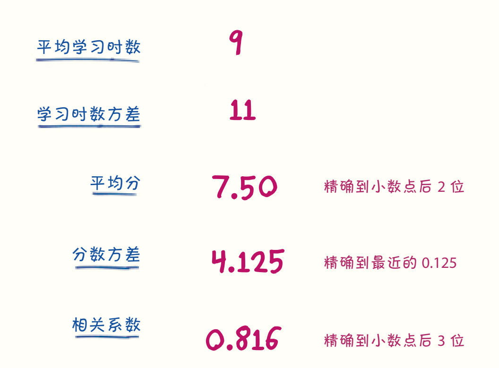
但是……行吧，先看看。（每个点代表一个学生）
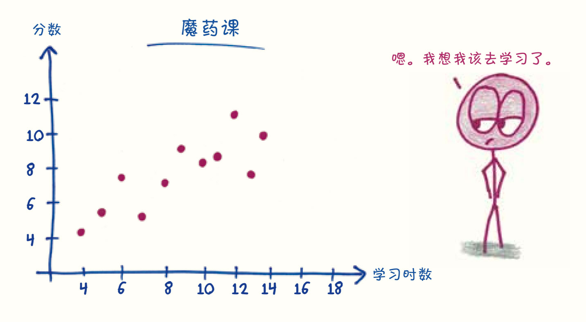
首先是魔药课，和我对考试的印象非常符合——多学习就能提高成绩。但这也不是绝对的，也会出现一些干扰相关性的小意外。因此，相关系数是0.816。
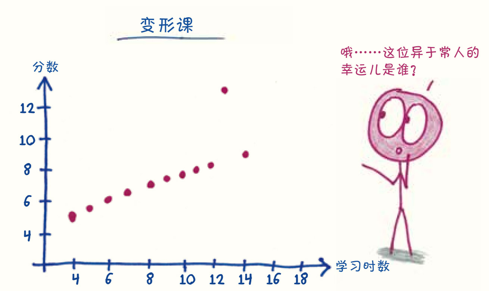
其次是变形课，变形课的分数遵循一个完美的线性关系，每多学习1个小时，考试成绩就会高0.35分——除了一个例外的孩子，他把相关系数从完美的1降到了0.816。
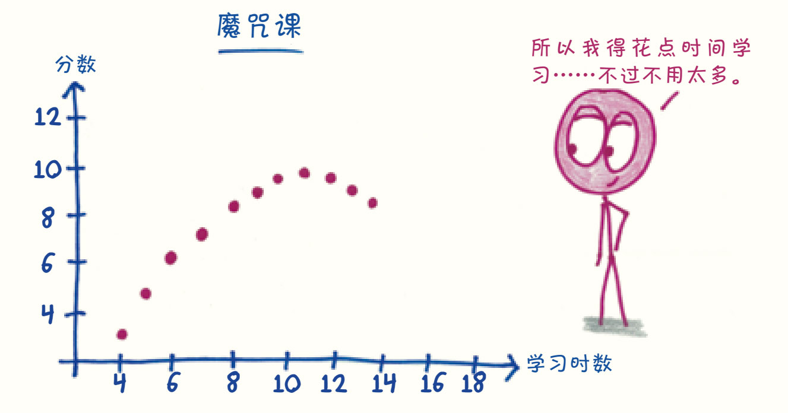
魔咒课考试遵循的模式更确定些——学习时间变长可以提高分数，但边际收益递减。当学习时数达到10小时后，更长的学习时间就会开始影响你的成绩（也许是因为影响了你的睡眠）。不过可别忘了，相关系数是用来检测线性关系的，不能体现二次函数的变量关系，因此相关系数是0.816。
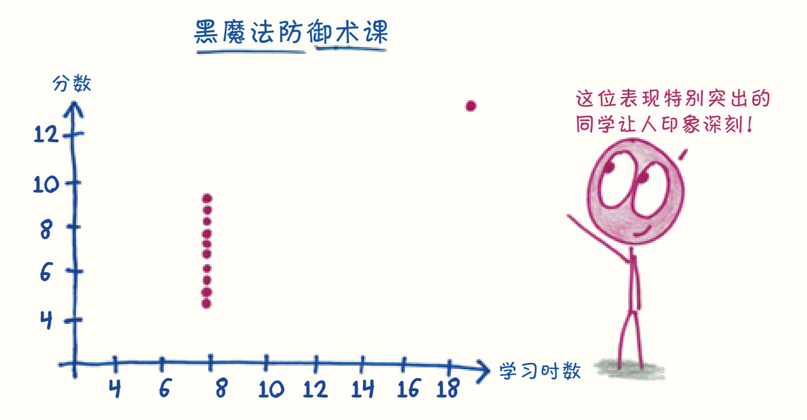
最后，在黑魔法防御术课中，除了一个学生外，其他学生的学习时间都是8个小时，拿到的分数却都不同，这就意味着学习时间不能帮助预测分数。由于那个例外的勤奋学生在学习时数达到19个小时后，取得了令人难以置信的最好成绩，这个单一的数据把学习时数和分数的相关系数从0提高到了……
0.816。
每一门课程的考试都遵循自己独特的逻辑和模式，但是相关系数却完全相同，忽略了它们的差异性。
这正是我要说的，统计学的本质：
统计学是一个不完美的目击证人，
它讲述的虽然是事实，但不是全部的事实。
欢迎引用我这句“名言”。或者，如果你喜欢传统的方法，也可以用自己的话转述，但别忘了署我的名字哦。